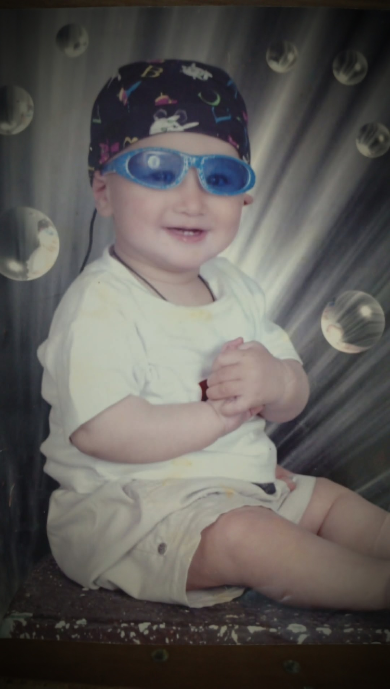
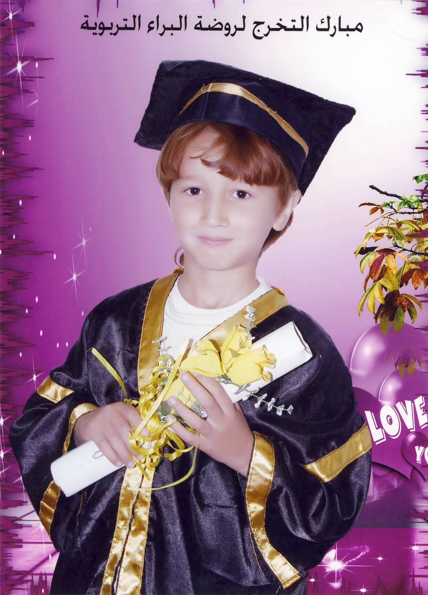

"في يوم ميلادكِ، لم أجد هدية توفيكِ حقكِ، فقررت أن أهديكِ (حصاد عمركِ).. رحلتي التي كنتِ أنتِ قبطانها، من صرختي الأولى، وحتى أصبحت رجلاً يعتمد عليه."
كبرتُ أمام عينيكِ، وفي كل مرحلة من عمري، كانت يداكِ هي السند، ودعواتكِ هي الدرع. في يوم ميلادكِ الميمون، أردت أن أريكِ كيف أزهرتِ في داخلي.. هذه مراحلي، وهذا أنا، ثمرة حبكِ وتعبكِ وسهركِ.

في هذه المرحلة، كنتُ لا أعرف من الدنيا سوى حضنكِ. سهرتِ الليالي الطوال لأنام، وتعبتِ لأرتاح. هذه النظرة البريئة والابتسامة كانت بفضل رعايتكِ واهتمامكِ بأدق تفاصيلي. شكراً على كل لحظة تعب في بداياتي.

أتذكرين هذا اليوم؟ تخرجي من روضة البراء.. كانت فرحتكِ تسبق فرحتي، وعيناكِ تلمعان فخراً بهذا الإنجاز الصغير. أنتِ من علمني الحرف الأول، وأنتِ من ألبسني ثوب النجاح لأول مرة. كل عام وأنتِ معلمتي الأولى.
ها قد كبر الطفل، وأصبح شاباً يشتد به الظهر. اليوم يا أمي، في عيد ميلادك، أقف أمامكِ رجلاً يفخر بأنه "ابن أم قيس". كل ما أنا عليه اليوم، وكل ما سأكونه غداً، هو بفضل دعواتكِ ورضاكِ. أدامكِ الله تاجاً على رأسي.
عسى أيامكِ كلها أعياد ومسرات، وعمركِ مديد بالصحة والعافية. كل عام وأنتِ العيد لأيامنا، وكل عام وأنتِ النبض لقلوبنا.
أحبك جداً يا أمي ❤️